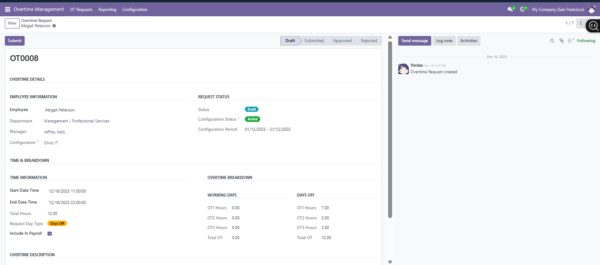
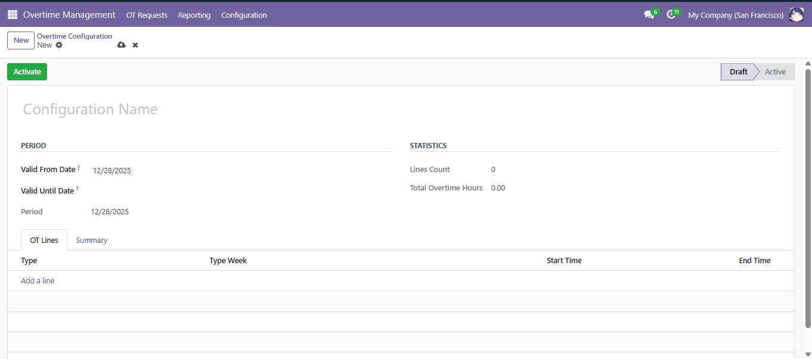
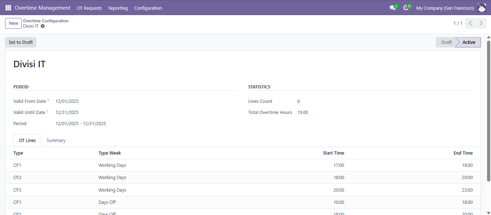
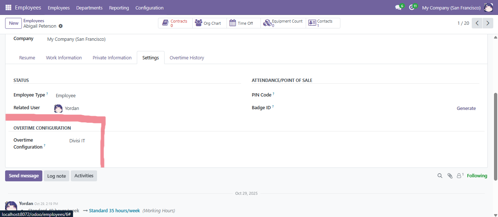
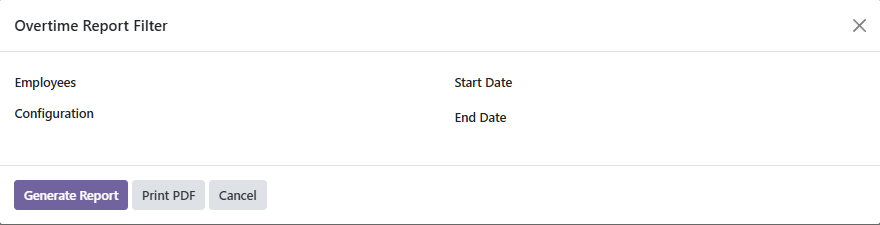

Modul ini memudahkan perusahaan dalam mengelola jam kerja dan lembur karyawan secara fleksibel, terstruktur, dan terintegrasi di Odoo 18.





For any help on this module or demo please contact us.
+62811-2227-5222
info@fujicon-japan.com